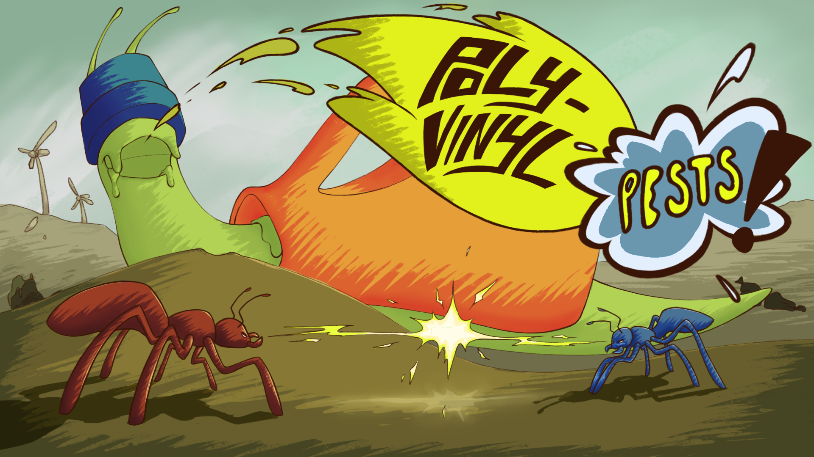

01Lead Programmer · Unity
Poly-Vinyl Pests! ↗
Lead Programmer on a 15-person capstone team, developing reusable gameplay systems and workflows for a competitive boss-rush game. Built designer-friendly boss AI, a modular upgrade framework, status effects, UI systems, local multiplayer features, and object-pooled projectile systems. I also created development and balancing tools, maintained technical documentation, profiled performance issues, managed Steam builds, and onboarded new programmers.